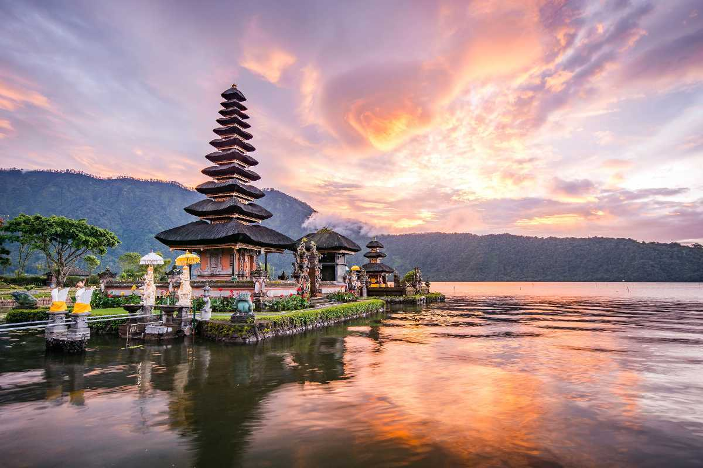

The top three places..
Tohoku-Japan

The northeastern wilderness of Japan is a vast area encompassing six rural prefectures that are linked by custom, heritage, and recent tragedy. The devastating earthquake and tsunami that struck Tohoku in 2011 revealed the resilient nature of its people, and local passion and pride are helping the region get back on its feet. There's a lot to be proud of: dramatic landscapes, historically significant sites, craft sake, and a variety of outdoor activities like rafting, hiking, and skiing. Tohoku, which is much more rural than Tokyo but more developed than Hokkaido, makes for exciting excursions from the capital and memorable side trips on the journey to Japan's main island's northernmost region.
Darjeeling-West Bengal

The queen of the hills is a Himalayan city in the Indian state of West Bengal. It is internationally renowned as a tourist destination for its spectacular view of Mt.Kanchandzonga, along with its tea industry and the Darjeeling Himalayan Railway, a UNESCO World Heritage site. One can have the view of entire Singalila Range along with Mt.Kanchandzonga, Bhutan Himalaya and a part of Everest range from Darjeeling. The eye caching valleys, meandering rivers and of course the lush green tea gardens are the unique features of Darjeeling .Beside all these the main attractions of this popular hill stations are Himalayan Mountaineering Institute (HMI) , Himalayan Zoo , Tiger Hill , Rock Garden , Batashiya Loop.
Bali-Indonesia
Bali , Island (pop: 4,309,600), Indonesia. Located in the Lesser Sunda Islands, off the eastern coast of Java, it constitutes, with minor adjacent islands, a province of Indonesia. The main towns are Singaraja and Denpasar, the provincial capital. The island is mountainous; its highest peak is Mount Agung (10,308 ft [3,142 m]). Colonized by India in early times and supplemented by émigrés from Java in the 16th century, Bali is the remaining stronghold of Hinduism in the Indonesian archipelago. Visited by the Dutch in the late 16th century, it came under Dutch rule only in the late 19th century. It was occupied by the Japanese in World War II and became part of Indonesia in 1950.